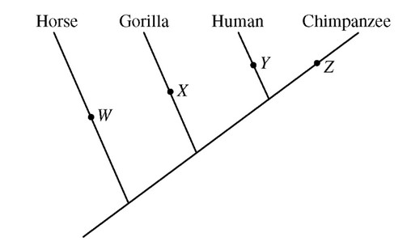
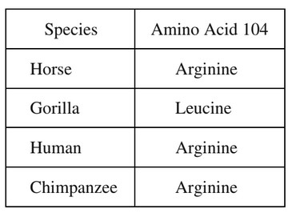

The cladogram shown below depicts an accepted model of the evolutionary relationships among selected species.

The amino acid at position 104 in the beta-hemoglobin protein for each of these four organisms is listed below.

The validity of the cladogram is best supported by molecular evidence for which of the following changes in the amino acid composition of the beta-hemoglobin protein during the evolution of these species?